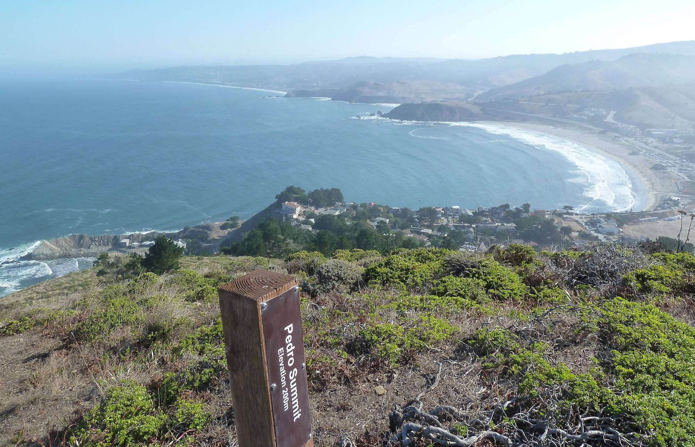
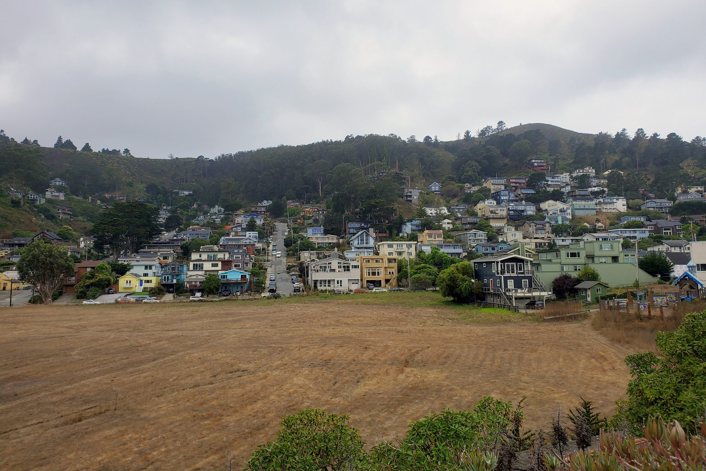
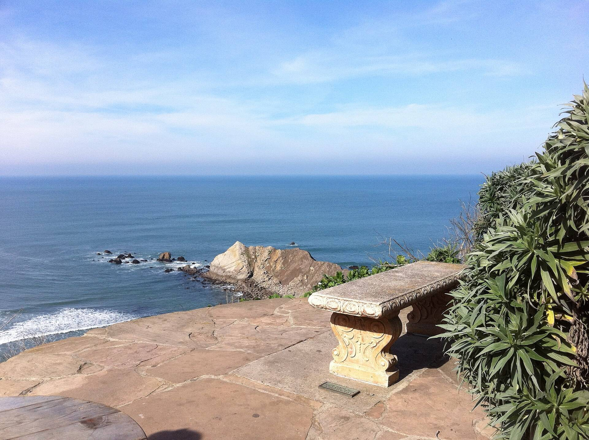
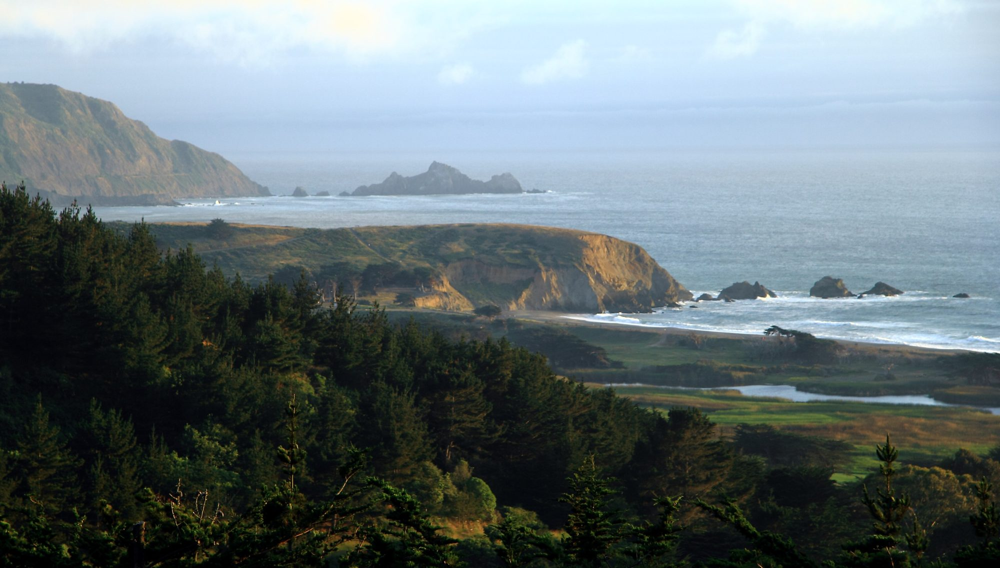

01

Pacifica, California
Every Pacifica listing on MLSListings, and what Stephanie knows about the neighborhoods between the ridges and the sea.
Living Here
Pacifica is a beach town on the edge of San Francisco: nine coastal communities that joined as one city in 1957 and still keep their own character.
Its neighborhoods string along Highway 1 between the ocean and the ridges, from Fairmont and Pacific Manor in the north to Linda Mar and Pedro Point in the south. Mori Point and Sweeney Ridge, where the Portolà expedition first saw San Francisco Bay in 1769, are part of the Golden Gate National Recreation Area. Fog is part of life here, and so are the surf, the beaches and miles of trails.
Saved Searches
Each card opens a live search of MLSListings listings, updated as they change.

01

02

03

04
<!-- IDX_ZONE: homes-for-sale-pacifica-ca-feed -->
The newest Pacifica listings in one compact row, six to eight homes. Builder places an IDX Broker widget here (a showcase or carousel of the town's newest-first saved link).
Pacifica's neighborhoods run north to south along Highway 1. Fairmont, Westview and Pacific Manor sit on the hills and bluffs near Daly City. Edgemar, Sharp Park and Fairway Park are the middle of town, with Vallemar and Rockaway Beach just south. Linda Mar fills the valley behind Pacifica State Beach, Park Pacifica climbs the back of the valley, and Pedro Point and Shelter Cove sit at the south end.
Most homes are single-family houses on their own lots, many built in the decades after World War II, with condos and townhomes in smaller complexes around town. Hillside streets trade flat yards for views; the valley floors trade views for an easy walk to the beach.
Pacifica State Beach, which locals call Linda Mar Beach, is a wide crescent at the mouth of the San Pedro Valley and one of the Bay Area's most popular places to learn to surf. The City of Pacifica runs it for California State Parks.
South of the beach, Pedro Point and Shelter Cove sit below the headlands. Since the Tom Lantos Tunnels opened in 2013, the old highway over Devil's Slide has been a trail for walkers and cyclists, and San Pedro Valley Park follows the creek into the hills behind Linda Mar.
In the middle of town, Sharp Park Golf Course runs along the beach behind a seawall. Alister MacKenzie designed it, and the City of San Francisco still owns and runs it.
Just south, Mori Point's 110 acres of bluffs, trails and spring wildflowers belong to the Golden Gate National Recreation Area. On its far side, Rockaway Beach is a small cove with restaurants and shops.
Day to Day
School information is factual and by district. Always confirm a specific address in the district's school finder.

Stephanie in Pacifica
Prices in Pacifica change with the neighborhood, the view and the month, so this page does not print a median.
The San Mateo County report Stephanie shares covers Pacifica. Before you tour, she can pull the recent sales on any street you are considering, so you know what a home there should bring.
Questions
What you spend depends most on the neighborhood and the home: a view, a remodel or a bigger lot moves the price more than anything else. Beyond the price, plan for property tax based on what you pay, homeowners insurance (some coastal homes need the California FAIR Plan) and, for condos and townhomes, association dues. For current prices, see the searches above or Stephanie's market reports.
It changes month to month, so this page does not print it. The San Mateo County market report covers Pacifica, and Stephanie can pull the recent sales for any street you are considering.
Pacifica School District runs the public schools from transitional kindergarten through eighth grade, and Jefferson Union High School District runs the high schools, including Oceana and Terra Nova, both in Pacifica. Boundaries can change, so confirm any address with the districts.
Pacifica sits just south of Daly City. Downtown San Francisco is about 15 miles north on Highway 1 and I-280, and SFO is about 10 miles east. SamTrans route 110 runs from Linda Mar to Daly City BART.
Nearby


Resources
Stand-in photographs via Wikimedia Commons: Pedro Point, Pacifica by C N (CC BY-SA 2.0); Pedro Point neighborhood by Pi.1415926535 (CC BY-SA 4.0); Shelter Cove by Anita Hart (CC BY-SA 2.0); Mori Point and Pedro Rock, Mori Point from Rockaway Beach and The view of Pacifica by John Menard (CC BY-SA 2.0); Pacifica, California by Carnaval.com Studios (CC BY 2.0); Pacifica State Beach by Bob n' Renee (CC BY 2.0); Pacifica Pier waves by ekaterina vladinova (CC0).
Contact
Call Stephanie at (650) 678-5707 or send her a note. She will walk you through the neighborhoods, from the valley floors to the hillsides, before you tour.